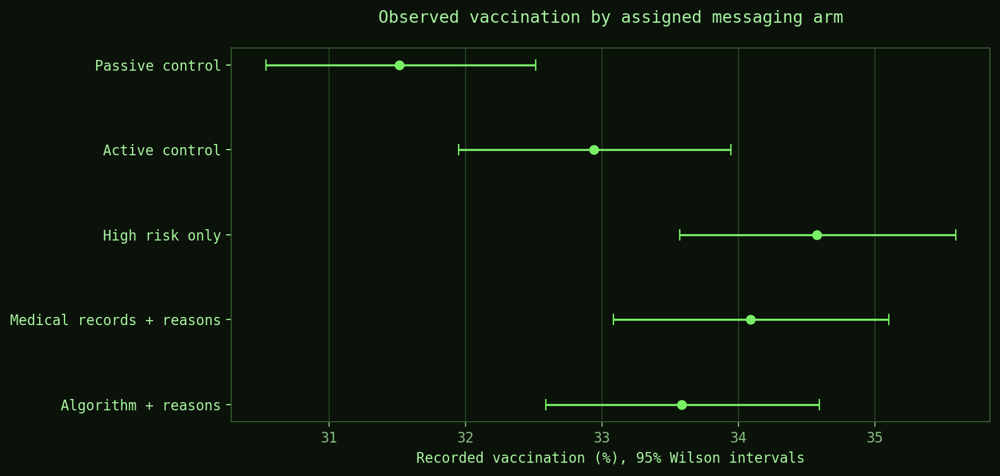
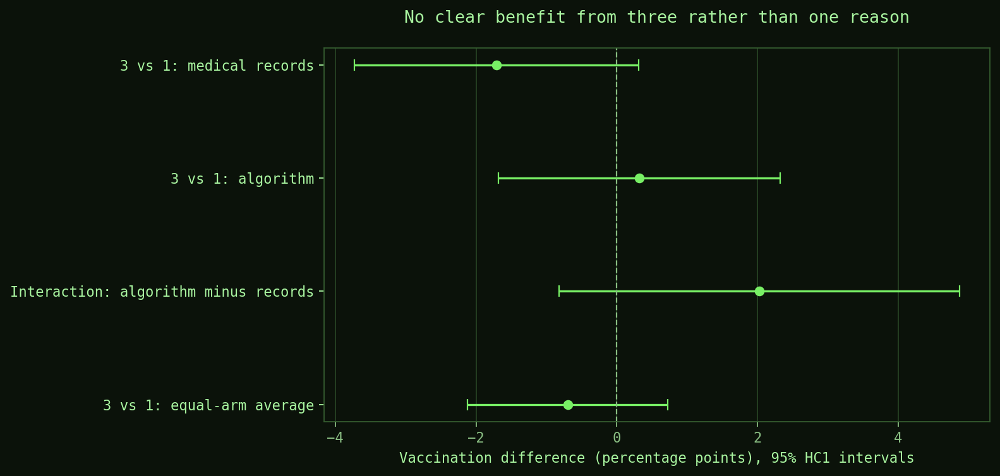

Do personalized risk messages increase flu vaccination?
A secondary analysis of a five-arm field study, examining whether risk information and personalized explanations improve recorded vaccination uptake.
The question
A reminder may prompt action. Does explaining a patient's elevated risk add value? And does naming an algorithm or supplying more personalized reasons change the response?
Patients were randomly assigned to no outreach, a basic reminder, high-risk information alone, a medical-record explanation with reasons, or an algorithm explanation with reasons. Within the two explanation arms, patients were also randomized to one or three reasons.
What the analysis found
| Comparison | Difference | 95% robust interval |
|---|---|---|
| Pooled high-risk messages vs no outreach | +2.57 pp | +1.42 to +3.71 pp |
| Pooled high-risk messages vs basic reminder | +1.14 pp | −0.01 to +2.30 pp |
| Three reasons vs one, equal average across explanation arms | −0.70 pp | −2.12 to +0.73 pp |
High-risk messaging exceeded no outreach by about 26 recorded vaccinations per 1,000 analyzed patients. Its advantage over a basic reminder was less certain. Additional reasons showed no clear incremental benefit.

My contribution
The original researchers designed and conducted the trial. My contribution is the reproducible Python analysis: auditing the source data, replicating model comparisons, evaluating uncertainty, and explaining what the evidence supports.
- Validated patient identifiers, outcomes, exclusions, and baseline balance.
- Reproduced source models and independently checked conventional estimates against R.
- Added robust intervals, risk-stratum adjustment, and population/model sensitivity checks.
- Analyzed the randomized reasons-count interaction in a self-contained notebook.
What more explanation changed

How to interpret the findings
The main analysis excludes some enrolled patients. Shared addresses may create dependence or spillovers, and recorded outcomes may be incomplete. Sensitivity checks do not remove all these limitations.
Confidence intervals are individual 95% HC1 intervals. Multiple-testing adjustments are applied within stated comparison families, without global error control across the project. Non-significant results do not prove equivalence or identify a mechanism.
These results support further evaluation of high-risk outreach, while leaving its incremental advantage over a standard reminder less certain. They do not show that the highest observed arm is best.
Source and attribution
Original study: Rosenbaum and colleagues, Algorithm-assisted personalized risk communication to encourage flu vaccination in the USA: three randomized field trials. Study 2: NCT05009251. Source data and code: OSF.
This is a partial replication and extension using the manuscript release. Known source discrepancies and unavailable verbatim message text are documented in the project. This website publishes aggregate results; it does not distribute patient-level data.